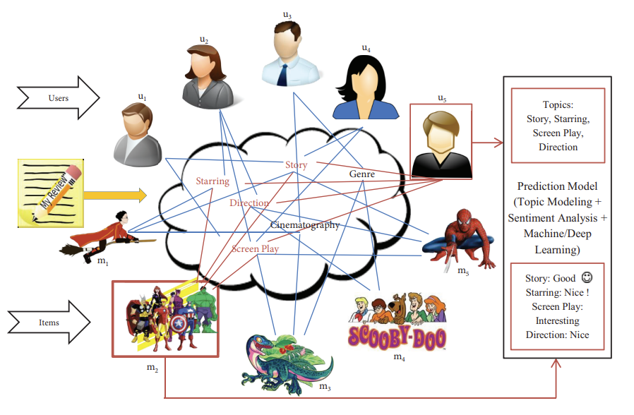

Ph.D. Research
My Ph.D. research focused on developing enhanced review rating prediction methodologies that effectively transform text reviews—an abundant and expressive source of insights—into precise ratings. These predicted ratings are subsequently integrated into traditional collaborative filtering, machine learning (ML), and deep learning (DL) algorithms to generate accurate recommendations. This innovative approach aims to bridge the gap between qualitative review content and quantitative rating systems, ultimately improving recommendation accuracy and user satisfaction.
Abstract of My Ph.D. Dissertation
The rise of E-commerce and Social networks during the last few decades has made Recommender System (RS) an essential one in our day-to-day life. The conventional "Word-of-Mouth Recommendations" are getting replaced by reviews and ratings given by users. According to ReviewTrackers online survey (2018), more than 90% of the users are going through online reviews before making a purchase decision. The insights present in reviews would help users make personal purchase decisions, track the product quality, and understand the public's opinion.
There are hundreds of review websites available online and thousands of reviews written for every product. Owing to this voluminous nature of reviews, identifying appropriate reviews is a challenging task for users. Furthermore, for certain domains, like restaurants, reviews may not be accompanied by overall ratings. Therefore, identifying informative/insightful reviews from a huge pile is necessary. A straightforward way of doing this is to understand the sentiment polarity of reviews. But, it is difficult to choose one single product from a set of products which are said to have positive polarity. According to the aforementioned survey, 70% of the customers say that they use ratings to filter out low-quality products in their product searches. Hence, a more granular measure of reviews which helps users infer better opinions is numeric ratings.
The review rating prediction problem can be approached in two different ways, namely, review content analysis and Collaborative Filetring (CF). The former one uses the Natural Language Processing (NLP) principles together with a Machine Learning (ML) or Deep Learning (DL) model to turn reviews into ratings. The latter one uses CF algorithms to predict the missing ratings in User-Item (UI) matrix. Four different review rating prediction approaches which exploit the aforesaid ways, namely Credible User Review Incorporated Collaborative Filtering (CURICF), Sentiment Enriched and Latent Dirichlet Allocation based review rating Prediction (SELDAP), Deep Learning based and Sentiment enriched Rating (DLSR) prediction, and Class Imbalance Aware Review (CIAR) rating prediction are proposed in this research.
The CURICF is a hybrid rating prediction approach that tries to predict the missing ratings in UI matrix by employing user-based CF and the useful insights present in the credible reviews. To gauge the credibility of a review, three factors such as the reputation of the reviewer, content quality, and the number of helpful votes received by the review are utilized.
The SELDAP approach effectively capitalizes the insights present in reviews and the power of ML techniques. This approach treats the rating prediction task as a regression problem. The latent topics that describe the review texts and lexicon-based sentiment scores calculated from those reviews are together used for training a ML regression model. The back propagation of Latent Dirichlet Allocation (LDA) is used to find the topic distribution and Valence-Aware Dictionary and sEntiment Reasoning (VADER) is used to infer the sentiment scores.
The DLSR approach treats the rating prediction as a multi-class classification problem. An empirical review of feature extraction techniques such as, LDA and Non-negative Matrix Factorization (NMF), and Term Frequency-Inverse Document Frequency (TF-IDF) is carried out in this work to examine their relative prediction performances. For the sake of empowering the rating prediction task with DL techniques, Long Short-Term Memory (LSTM) form of Recurrent Neural Networks (RNN) is used to train the prediction model and in turn to predict the ratings.
The CIAR approach tries to reduce the effect of class imbalance issue on review rating prediction task by incorporating appropriate re-sampling techniques and ensemble structures. The combination of random Under-sampling of the majority class and Synthetic Minority Over-sampling Technique (SMOTE) based Over-sampling of minority classes is used in CIAR to create balanced datasets. The integration of Bagging and Boosting is used in predicting the ratings corresponding to reviews.
For experimental works, Amazon products dataset, Yelp restaurant dataset, and Coursera's course review dataset are used. The performances of the proposed approaches are compared with certain state-of-the-art techniques. The experimental results show that the proposed works outperform the baselines with respect to various aspects.